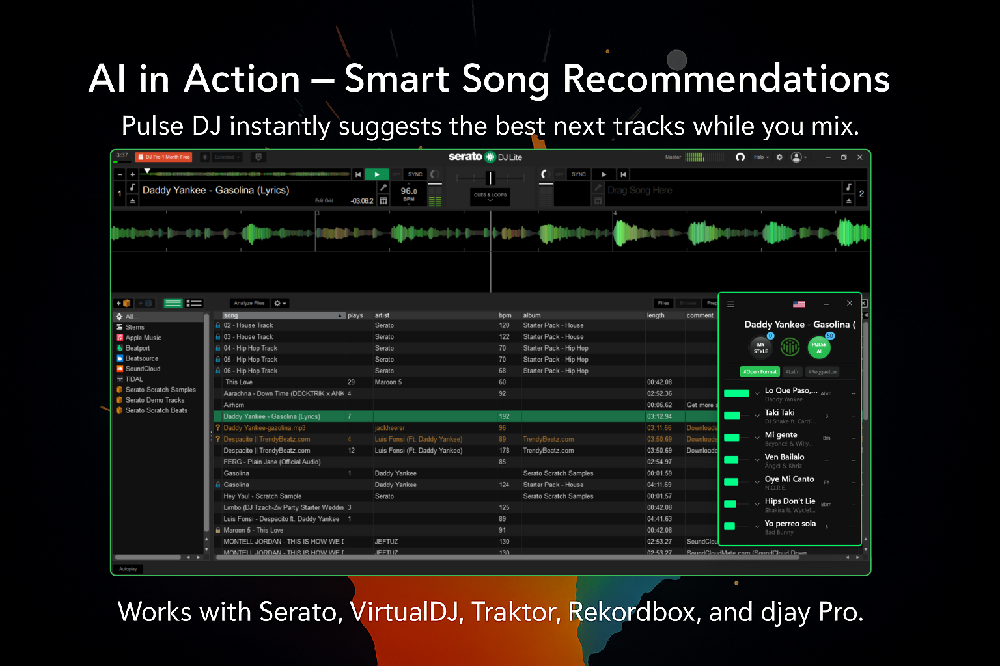
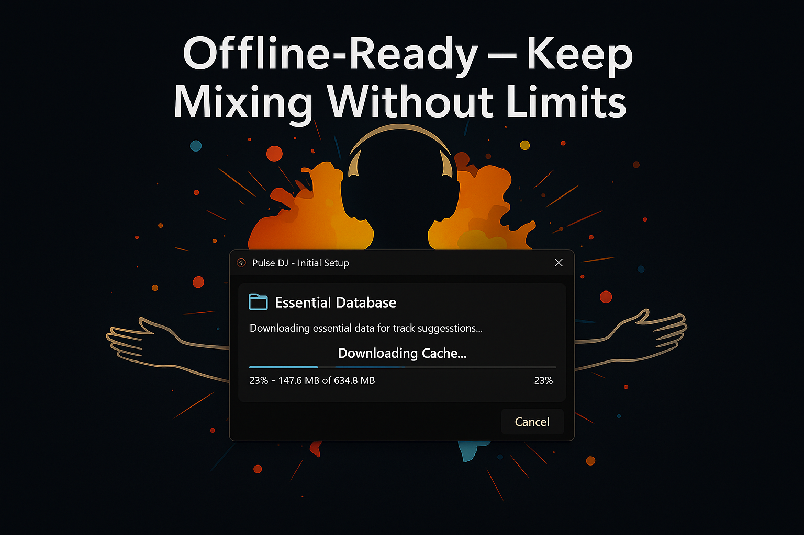
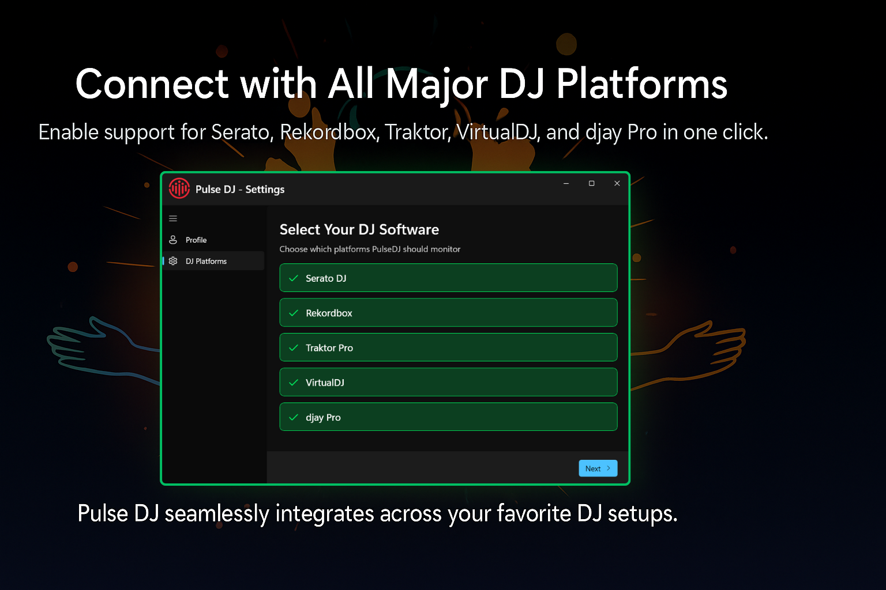
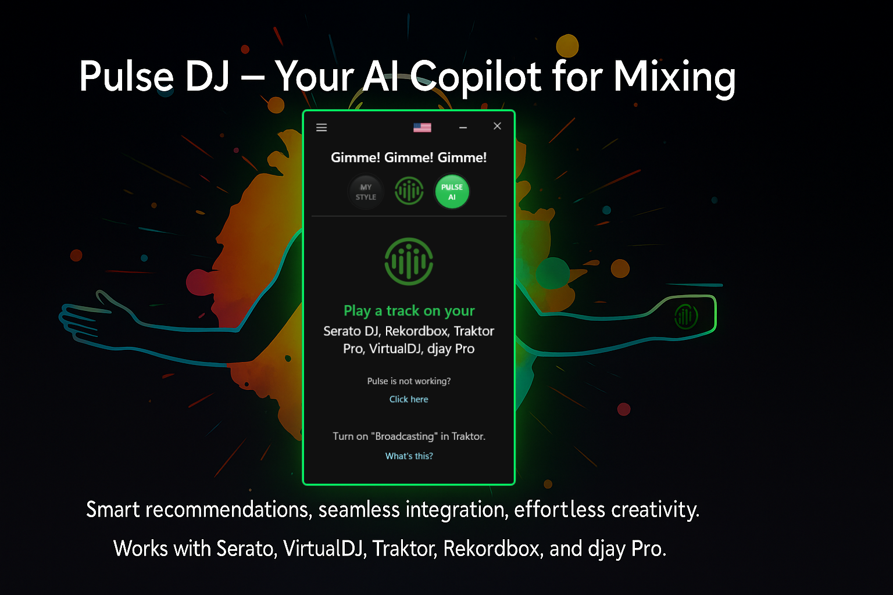
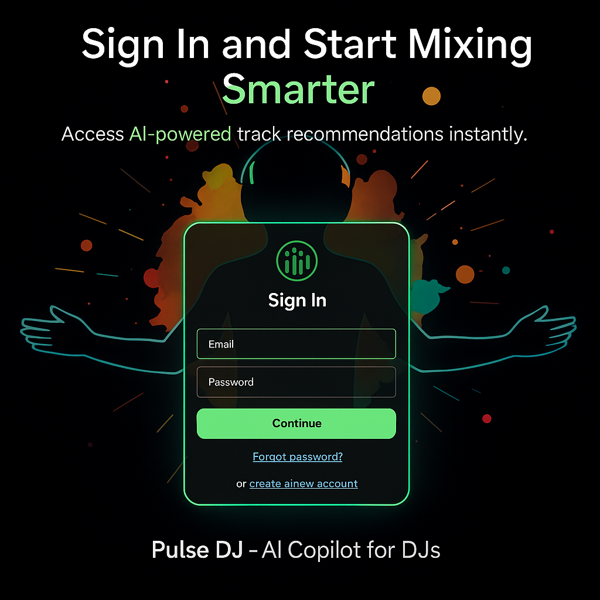

PulseDJ
Every question, in one place. If something is not here, write to support@pulsedj.com.
Pulse is a DJ copilot for macOS and Windows. It watches what you're playing in your DJ software and suggests what to play next, based on what thousands of DJs have played in similar situations. Think of it as a second brain that knows what works on the dancefloor.

See the Quick Guide.
We currently support Serato, Rekordbox, Traktor, Virtual DJ and djay Pro.
Pulse is available on both Mac and Windows.
You can use Pulse at parties without an internet connection. You only need a network connection during the first hour or so - Pulse analyzes your history and loads a local database so you can use it offline later. When you do have an internet connection during a party, it can improve the suggestions you get.

Pulse's full functionality is available in the Free plan.
We hope that in the future, most of Pulse will remain free, with some premium features allowing us to continue providing the rest for free.
Pulse is funded by Zeev Ventures from California. This gives us the privilege of operating for a few years without being profitable as we build its value for you.
Every feature is available in the Free plan. Pro plans add speed, remove limits, and help fund ongoing development.
Pulse automatically notifies you when a new version is available - just follow the on-screen prompt to update. You can also update manually by downloading the latest version from pulsedj.com. Installing over your existing version is safe - all your settings and history are preserved.
See the full version history and what's new →
When you first launch Pulse, an onboarding wizard walks you through:
If you ever need to redo this setup, go to Profile → Platform Settings.

Yes. Go to Profile → Platform Settings to re-run the setup wizard. This is useful if you install a new DJ platform or need to change the folder path.
Yes, you need to create a PulseDJ account to use the app, but it's quick, simple, and free. The app guides you through the sign-up process on first launch.
Not at all. Pulse is designed as a companion tool that runs alongside your DJ software - it enhances your existing setup without replacing anything. You keep mixing on the platform you're most comfortable with.
Yes. Because Pulse integrates with your DJ software (not your hardware directly), it works with any controller, mixer, or CDJ setup that is compatible with your DJ software. No changes to your physical gear needed.
Yes. Pulse supports both Apple Silicon (M1/M2/M3/M4) and Intel Macs, as long as you're running macOS 11 or later.
Yes. Install Pulse on as many machines as you like and sign in with the same account on each. This keeps your full playing history synced across devices so your personalized MyStyle suggestions follow you everywhere.
Yes. If you keep music on external drives or across multiple libraries, make sure the paths in Profile → Platform Settings point to the correct history/library locations so suggestions stay accurate.
No. Pulse only reads your library and history data - it never modifies your audio files, crates, or playlists.
Pulse gives you two kinds of suggestions that work on different timelines:
Currently we only guarantee full support for Serato, Rekordbox, Traktor, VirtualDJ, and djay Pro. We continuously work to expand compatibility based on user feedback. If you use a different platform, let us know at support@pulsedj.com.
When you play a track in your DJ software, Pulse detects it and shows a list of suggested next tracks. These suggestions are based on what thousands of DJs have played after the same (or similar) tracks across millions of analyzed song-pairs.
Each suggestion shows:
The green bar shows the relevance of the suggested song to the current point in the party, based on the order of songs that you've played till now.
Pulse offers several recommendation algorithms you can switch between:
You can switch modes from the recommendation view.
Yes. BPM and key are shown for each suggested track. In the Pulse Window (floating view), BPM appears on hover. In the full view, it's always visible. You can toggle between Camelot notation (e.g., 8A, 11B) and standard musical keys (e.g., Am, F) in Profile → Extra Features → Use Musical Keys.
Pulse doesn't mind if keylock is on or off. Regarding the recommendations that are way off the BPM - Pulse only suggests ±10 BPMs from the currently playing track. However, if one of the tracks has had its BPM modified in your library, then Pulse uses that as the "real" BPM and that could be the cause.
When a suggestion is by the same artist as the previously played track, Pulse marks it with a "Same Artist" label and dims it slightly. It's still there if you want it, but deprioritized so you can spot variety more easily.
Suggestions are dimmed when:
They remain visible so you can still choose them, but they're de-emphasized to help you spot fresh picks.
When enabled in Profile → Extra Features, Pulse filters recommendations to stay within the genre you're currently playing. This is helpful for genre-specific sets.
The Pulse Window is a compact, always-on-top floating panel that shows your recommendations while you DJ. It stays visible over your DJ software so you can glance at suggestions without switching windows. Access it from the sidebar by clicking the pin icon or "Pulse Window".

Yes. Go to Profile → Configuration and adjust the Suggestion Font Size and Suggestion Spacing sliders to make the text larger/smaller and adjust spacing between recommendations.
Yes - if the track is on your computer. Tracks with a green drag handle icon (six dots) can be dragged directly from Pulse into your DJ software's deck or playlist. Just grab the drag handle and drop it where you want.
If the track file isn't available locally, you'll see a greyed-out drag icon. In that case, you can still click the track name to copy it to your clipboard, then paste it into your DJ software's search bar.
A greyed-out drag icon means the track file isn't currently available on your computer. This can happen if:
Play the track once from a local file and Pulse will remember it for next time.
Toggle the Local Tracks Filter to only see recommendations for tracks that exist on your computer. This is especially useful during live sets when you want suggestions you can actually play.
Yes. Hover over a recommendation and click the pin icon to pin it to the top of your list. Pinned tracks stay visible even as recommendations change - even when you switch to a new song. To unpin, hover and click the unpin icon.
Click any track in the recommendation list to copy its name to your clipboard. You can also hover and click the copy icon for the same result. Paste it into your DJ software's search bar to find the track.
Events let you create named DJ events (e.g., "Friday Night at Club X") and generate a unique QR code for each one. Share the QR code with your audience so they can request songs.
To create an event, go to Events from the sidebar and click Add Event.
Song Requests let your audience request tracks during your set:
Requested tracks show up as highlighted recommendations (in blue) when they're relevant to what you're currently playing.
DJ Groups let you connect with other DJs. Create a group or join one with a code, and share your music style data. This helps Pulse learn from a broader pool of DJ preferences and can improve recommendations.
You can create a new group, join an existing one with a code, and see which DJs are in your groups.
The Hot 100 is a real-time chart of the 100 most-played tracks across all Pulse DJs. It helps you discover trending tracks, identify what's gaining momentum, and get inspiration for your sets.
Access it from the sidebar. A "NEW" badge appears when the chart has been updated since you last viewed it.
The chart is generated from anonymous, aggregated play data from all active PulseDJ users. It directly reflects what tracks are being mixed on dance floors right now - making it one of the most accurate real-world DJ charts available.
Yes - two filters are available:
Click the flag icon in the top right of the interface to switch country.
The chart updates continuously to reflect what DJs are playing right now. A "NEW" badge in the sidebar tells you when fresh data is available.
It reflects what DJs are actually playing - which can include both brand new releases and evergreen classics that are trending in current sets. There's no cutoff by release date.
Historical charting is on our roadmap. For now, the Hot 100 focuses on real-time popularity.
After each DJ session, Pulse generates a detailed report with:
Reports also have a web view at dj.pulseparty.io for a better viewing experience. A "NEW" badge appears when you have unread reports.
Pulse lets you select one or more countries to tailor your recommendations to regional music preferences. Different countries have different DJ cultures and popular tracks. Access the country selector from the globe icon in the sidebar.
A red "Select Country" label means your country data hasn't finished caching yet - it will resolve once the download completes.
Yes. Pulse supports 8 languages:
Change the language in Profile → Configuration using the language dropdown.
No. When Pulse loads for the first time, it may ask you to adjust a setting in Rekordbox, VirtualDJ, or Traktor (like "time to save to history" or broadcasting settings). After that, Pulse never modifies your DJ software. It simply reads the history files that your software writes to disk to understand what tracks you've played, so you're always in full control.
Pulse reads Serato's history files from the _Serato_ folder (default: ~/Music/_Serato_/). No additional configuration needed - just play a track in Serato and Pulse picks it up.
If Pulse isn't detecting your tracks:
~/Music/_Serato_/)Pulse reads Rekordbox's history database. On first launch, Pulse will ask to update a Rekordbox setting (history write interval). After that:
Pulse uses Traktor's broadcasting feature to detect what's playing. On first setup:
Important settings (Pulse configures these automatically, but if you need to verify):
127.0.0.128551If you have multiple Traktor versions installed, go to Profile → Platform Settings to select the correct one.
Pulse reads VirtualDJ's history .m3u files and database. On first setup:
Required settings (Pulse configures these automatically):
historyDelay → 1 (Settings → Options → Browser)writeHistory → Yes (Settings → Options → Browser)If these settings aren't correct, Pulse will prompt you to fix them. Make sure to restart VirtualDJ after changes.
Pulse reads djay Pro's local database to detect tracks. Setup is handled automatically during onboarding. Just play a track in djay Pro and Pulse will show suggestions.
On our homepage you can see how many parties Pulse has analyzed (3,300,000 as of Mar/2026) and the number of song-pairs analyzed (300,000,000 as of Mar/2026).
When a DJ installs Pulse, their stats (songs played) are anonymously added to the millions of songs already in the database. This helps Pulse recommend tracks that the DJ has typically played after each track, and also fine-tunes Pulse AI's track selection algorithm to suggest better tracks for everyone.
Pulse keeps your data anonymous, so no other DJ can see your specific track history. As you continue using Pulse, it collects this information in the same anonymized way to improve future recommendations.
Serato
~/Music/_Serato_/). If not, go to Profile → Platform Settings to set the correct path.Rekordbox
VirtualDJ
historyDelay is set to 1 and writeHistory is set to Yes in Settings → Options → Browser.Traktor
127.0.0.1 and port is 28551.djay Pro
When a track is loaded to the deck, Serato and other DJ software write the name of the track into the history file, and Pulse can't know if it was played or just queued, so it recommends next songs for that track. A workaround is to press the left arrow next to the "Now Playing" in Pulse to go back to the previous song and its suggestions.
If our support team asks for your logs, go to Profile → Configuration and click Upload Log. This sends your Pulse log file to our team so we can diagnose issues.
This means Pulse remembers the track from a past session, but can't find the audio file on your computer. It may have been moved, deleted, or played from a USB drive that isn't connected. Play the track once from a local file and Pulse will remember it for next time.
A few common causes:
If you're unable to sign in, try the following:

This was a known bug in older versions. Update to Pulse v2.7.2 or later - the fix is included. You can also manually change the language in Profile → Configuration → Language.
This usually means Pulse can't find VirtualDJ's history file - often because VirtualDJ is installed in a non-default location or your music is on an external drive.
Go to Profile → Platform Settings and verify the path to your VirtualDJ history file. Also note that MyStyle needs time to learn your habits - keep Pulse open during your sets so it can build your profile.
Open Profile → Platform Settings and update the paths to your DJ software's history and library folders. Then restart both Pulse and your DJ software, and play a track to confirm detection.
Pulse uses the BPM values stored in your library. If you've changed BPMs, the updated values will be picked up on the next detection. Play a few tracks and the suggestions will realign to your updated metadata.
Duplicates usually come from duplicate files or multiple library locations pointing to the same track. Consolidate your music library and make sure the correct paths are set in Profile → Platform Settings.
Play a few tracks from your target genre - Pulse adapts in real time to the direction your set is going. You can also enable Auto Stay in Genre in Profile → Extra Features to keep suggestions within your current genre.
A dedicated hide/mute control for individual suggestions is on our roadmap. For now, keep playing the styles you want more of - Pulse will learn your preferences over time.
You can report issues or provide feedback directly through the Pulse app or by contacting our support team at support@pulsedj.com.
Join the Pulse DJ Facebook Group - accessible directly from the sidebar (Facebook icon at the bottom). Connect with other DJs, share tips, and give feedback: facebook.com/groups/2051844701930444
When a recommendation has known remixes, Pulse groups them under a REMIX label with a chevron. Click or hover to expand and see all remix versions with their individual relevance bars. This helps you pick the right version for the moment.
Use the Search field at the top of the Pulse Window. Start typing a track name and Pulse will show autocomplete suggestions. Select a track to see recommendations for it - even if it's not currently playing.